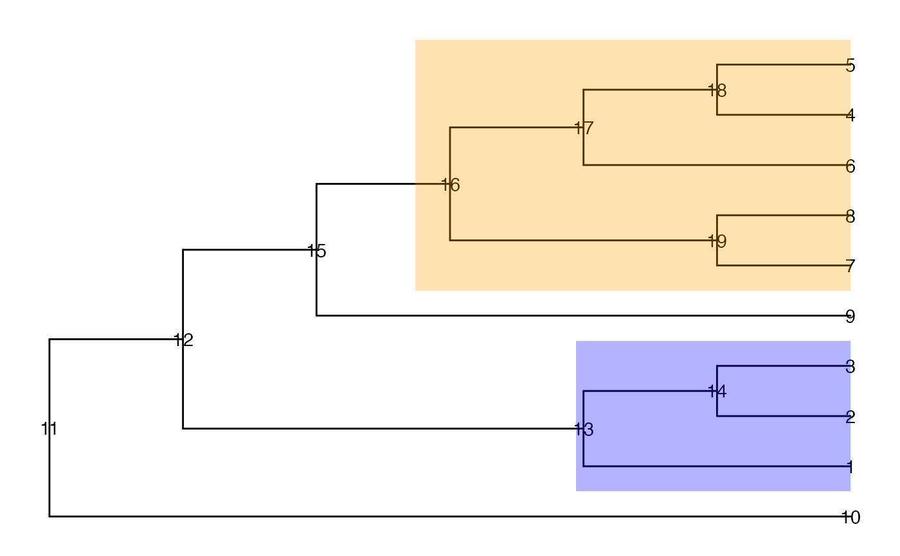

Calculate the true positive rate on a tree structure, at either leaf or node level.
Arguments
- tree
A
phyloobject.- truth
True signal nodes (e.g., nodes that are truly differentially abundant between experimental conditions). Note: when the TPR is requested at the leaf level (
only.leaf = TRUE), the descendant leaves of the given nodes will be found and the TPR will be estimated on the leaf level.- found
Detected signal nodes (e.g., nodes that have been found to be differentially abundant via a statistical testing procedure). Note: when the TPR is requested at the leaf level (
only.leaf = TRUE), the descendant leaves of the given nodes will be found out and the TPR will be estimated on the leaf level.- only.leaf
A logical scalar. If
TRUE, the false discovery rate is calculated at the leaf (tip) level; otherwise it is calculated at the node level.
Examples
suppressPackageStartupMessages({
library(ggtree)
library(TreeSummarizedExperiment)
})
data("tinyTree")
## Two branches are truly differential
ggtree(tinyTree, branch.length = "none") +
geom_text2(aes(label = node)) +
geom_hilight(node = 16, fill = "orange", alpha = 0.3) +
geom_hilight(node = 13, fill = "blue", alpha = 0.3)

## TPR at the leaf level if nodes 14 and 15 are called differential (7/8)
tpr(tree = tinyTree, truth = c(16, 13),
found = c(15, 14), only.leaf = TRUE)
#> tpr
#> 0.875
## TPR at the node level if nodes 14 and 15 are called differential (12/14)
tpr(tree = tinyTree, truth = c(16, 13),
found = c(15, 14), only.leaf = FALSE)
#> tpr
#> 0.8571429